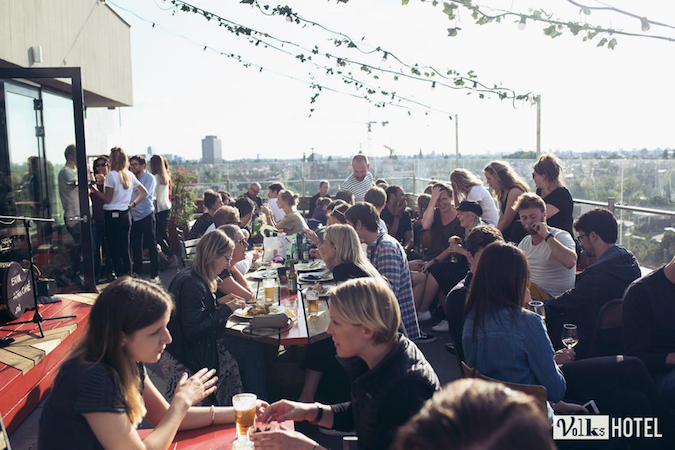

Accomodation
Hostels
The Generator Hostel
The Generator is located right next to the beautiful Oosterpark in Amsterdam Oost. As far as hostels go, it is on the pricier side. Even so, it is a beautiful hostel in a great location that sells out quickly.
ClinkNOORD
ClinkNOORD is a 5 minute ferry ride from the Amsterdam Centraal Station (the ferry runs all night). It is a cheaper option, but still high quality hostel. Several of my friends have stayed here and had great experiences!
Hotels
The Volkshotel
The Volkshotel is in Amsterdam Oost and is located right across the street from where I stayed. It has a rooftop restaurant and bar with incredible views of the city. It even has rooftop hot tubs!

The Student Hotel
The Student Hotel Amsterdam City is where I stayed during my four months in Amsterdam. The hotel has a section for students staying long-term, and a separate section of the hotel for guests of all ages. The hotel side can be a bit pricey, but the interior is stunning. You definitely get Amsterdam's unique design vibes.